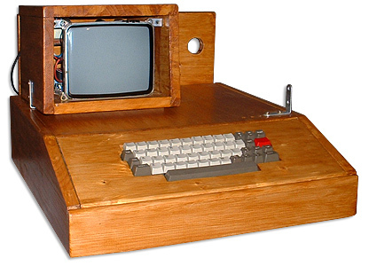

CONTENU :
En 1958 l’invention des circuits intégrés par l’entreprise Texas Instruments va permettre de réduire encore la taille et le coût des ordinateurs grâce à l’utilisation de multiples transistors sur un même circuit électronique. C’est grâce à ces multiples inventions au fil des années que plusieurs ordinateurs à base de transistors dont le DEC PDP-8 font leurs apparitions.

En 1971 apparaît le premier micro ordinateur : le Kenback 1, avec une mémoire de 256 octets. La même année Intel crée le premier microprocesseur : l’Intel 4004. Ce processeur sera d’ailleurs amélioré à chaque nouvelle version et beaucoup plus performant. En 1976, Steve Jobs et Steve Wozniak créent le Apple I dans leur garage. Cet ordinateur lors de sa sortie se distinguait par l’ajout d’un clavier et d’un écran ce qui était innovant pour son époque
